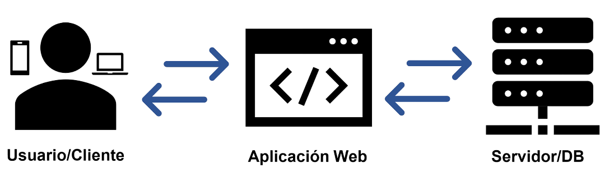

Arquitectura Cliente-Servidor en Desarrollo Web
¿Qué papel tiene la arquitectura Cliente-Servidor en la programación web dinámica?
La arquitectura Cliente–Servidor es esencial para la programación web dinámica ya que permite que el navegador o el cliente solicite información o acciones, mientras que el servidor realiza el procesamiento de estas solicitudes, accede a los datos y genera las respuestas requeridas por el cliente. Su principal importancia es la separación de responsabilidad, cada uno trabaja por separado, sin embargo, son interdependientes. El servidor se centraliza en la lógica y los datos, esto ayuda a mejorar la seguridad y eficiencia. Mientras que el cliente se centra en el diseño, en lo que ve el usuario en el navegador. Esta arquitectura también permite la posibilidad de desarrollo independiente y escalable, por lo que diferentes equipos pueden trabajar simultáneamente en el cliente y servidor.
Ejemplo: Tienda en línea
Cuando entras a comprar algo en una tienda en línea, tu navegador (cliente) pide datos al servidor, el servidor busca en la base de datos, procesa la lógica del negocio (descuentos, disponibilidad, etc.) y te devuelve el resultado en forma de página web. Esa interacción continua entre el usuario y la web es la fundamentación de la arquitectura cliente-servidor.
Modelo Cliente-Servidor
¿Qué importancia tiene la investigación en el territorio para el análisis de requisitos y especificaciones técnicas en programación web?
La investigación del territorio es fundamental al iniciar un proyecto de software, ya que permite elegir la arquitectura más adecuada y levantar requisitos de acuerdo con las necesidades de los usuarios. Conocer qué tecnologías prefieren en el territorio, por ejemplo, si los usuarios utilizan más dispositivos móviles o computadores, o si existen limitaciones de hardware y conectividad. Esto ayuda a definir requisitos y especificaciones técnicas precisas. De esta manera, se puede lograr cumplir con las necesidades del usuario o cliente.
Bibliografía
- Arquitectura Cliente-Servidor. (s. f.). https://reactiveprogramming.io/blog/es/estilos-arquitectonicos/cliente-servidor
- Schiaffarino, A., & Schiaffarino, A. (2019, 7 agosto). Modelo cliente servidor. Infranetworking. https://blog.infranetworking.com/modelo-cliente-servidor/